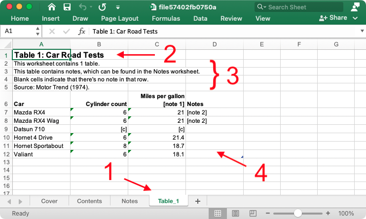

Purpose
This vignette provides a quick lookup of spreadsheet nomenclature, as used in the {aftables} package.
Terminology
Certain language and conventions are used in the package to talk about spreadsheets.
A workbook is a spreadsheet-like structure. It contains tabs that are each named with a unique tab title. Each tab contains a sheet.
Sheets can be one of four sheet types that dictate their content, layout and style:
- A cover sheet contains the title of the workbook and information about the data it contains, who has produced it, etc
- A contents sheet contains a table showing the contents of the workbook at a glance, with one row per sheet (not including the cover or itself)
- A notes sheet contains a table with a lookup of note codes (e.g. ‘[note 1]’) to their explanations
- One or more tables sheets contain statistical tables (the main purpose for the existence of the spreadsheet) or annexes of supporting information
The cover, contents and notes sheets can be considered meta sheets because they provide contextual information about the workbook and its contents.
Sheets themselves are composed of inserted elements that appear in the following row order (if present):
- a sheet title to be displayed at the top of the sheet (user-provided)
- a table count so users know how many tables are in the sheet (auto-generated)
- a notes statement that declares if a table contains notes (if applicable, auto-generated)
- a blank cells statement that indicates the meaning behind any blank cells in a table (if applicable, user-provided)
- a source statement to explain where the data came from (if applicable, user-provided)
- a table that contains information as rows and columns (user-provided) and has a table name (auto-generated) which appears as the ‘name’ of the marked-up table
Example
This is an example xlsx output from the {aftables} package:

The labels in the image above highlight:
- The tabs and their tab titles, open on a sheet called ‘Table_1’ (with each of the meta sheets currently hidden).
- The sheet title.
- Several elements: the table count, the notes statement (because the table contains notes), the blank cells statement (because the table contains blank cells) and a source statement for the data.
- A marked-up table, which contains suppressed values (i.e. ‘[c]’) and notes (e.g. ‘[note 1]’).
Contribute
To contribute, please add an issue or a pull request after reading the code of conduct and contributing guidance.